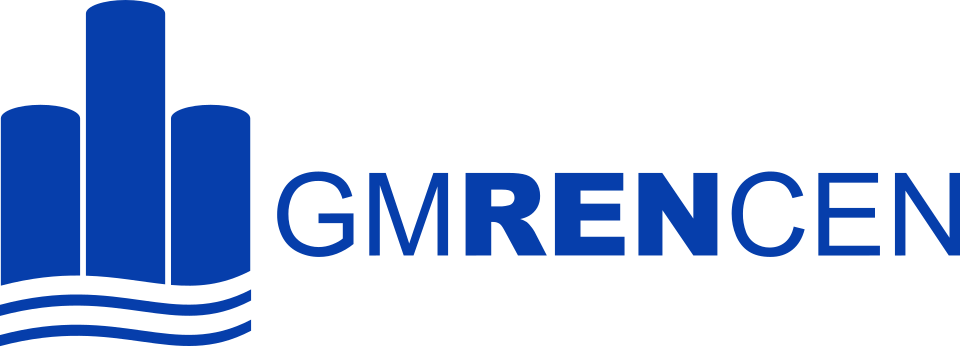

르네상스 센터 Renaissance Center
르네상스 센터(Renaissance Center)는 미국 미시간주 디트로이트 도심의 디트로이트 국제 강변에 자리한 복합 용도 건물 단지이다. 흔히 RenCen이라 불리며 일곱 개의 연결된 타워로 이루어진다.
최종 업데이트

르네상스 센터는 어떤 브랜드인가
르네상스 센터는 디트로이트 도심의 디트로이트 국제 강변에 위치한 랜드마크 복합 단지로, 흔히 RenCen이라 불린다. 단지는 74층 메리어트 호텔을 중심으로 네 개의 낮은 오피스 고층 건물이 둘러싸고, 동쪽에 두 개의 보조 오피스 타워가 붙은 구조이다.
타워들은 공공 공간, 컨퍼런스 센터, 소매점을 갖춘 큰 사각형 포디움으로 연결된다. 1970년대 도시 재생 사업으로 개발되었고 '도시 속의 도시'를 목표로 구상했다.
연면적은 5,552,000제곱피트(515,800 m2)로 세계에서 가장 큰 상업 단지 가운데 하나이지만, COVID-19 팬데믹 이후 입주율이 크게 떨어졌다. 디트로이트 스카이라인의 두드러진 특징이며 도시의 문화적 상징으로 널리 여겨진다.
르네상스 센터는 어떻게 시작되고 성장했나
이 구상은 당시 Ford Motor Company 회장이던 Henry Ford II가 떠올렸다. 그는 1970년 다른 기업인들과 함께 민간 비영리 개발 조직인 Detroit Renaissance를 결성해 건설 활동을 촉진하고 디트로이트 경제를 되살리려 했다.
첫 단계 공사는 1971년에 발표되었고, Ford Motor Company가 주도한 컨소시엄이 자금을 댔으며 John Portman이 수석 건축가를 맡았다. 첫 단계는 1976년 7월 1일 문을 열었고, 가장 높은 다섯 개 타워는 1976년부터 1977년까지 단계적으로 완공되었다.
낮은 두 개 타워는 1981년에 추가되었다. 완공 당시 미국 역사상 가장 큰 민간 개발 사업이었고 중앙 타워는 세계에서 가장 높은 호텔이었다.
르네상스 센터의 브랜드 아이덴티티는 무엇인가
Ford가 주도해 1970년대에 '도시 속의 도시'로 구상한 디트로이트 강변의 일곱 개 타워 복합 단지이며, 도시 스카이라인을 대표하는 랜드마크이다.
르네상스 센터의 대표 제품과 서비스는 무엇인가
단지는 일곱 개의 연결된 타워로 구성되며, 중심의 74층 메리어트 호텔은 미시간에서 가장 높은 건물이다. 호텔 주변에는 네 개의 낮은 오피스 고층 건물이 서 있고, 동쪽에는 두 개의 보조 오피스 타워가 있다.
포디움에는 공공 공간, 컨퍼런스 센터, 소매점이 들어서 있다. 쇼핑 공간에는 원래 고급 부티크가 입점했으나 지금은 음식점 비중이 더 커졌다.
중앙 호텔 타워는 처음에 Westin Hotels의 플래그십이었고, 1977년 Western International Hotels가 운영하는 Detroit Plaza Hotel로 개장했다.
르네상스 센터는 지금 어떤 상태인가
General Motors는 1996년 글로벌 본사로 쓰기 위해 단지를 매입했고, 2000년대 초 대대적으로 개조해 브루탈리즘 양식의 내부를 현대화하고 강변에 유리 소매 아트리움과 공공 광장을 더했다. COVID-19 팬데믹 이후 입주율은 크게 줄었다.
General Motors는 2026년 초 본사를 이곳에서 옮겼으며, 단지는 일부 철거된 뒤 재개발될 계획이다.
르네상스 센터 로고는 어떻게 변해왔나
자주 묻는 질문
르네상스 센터는 어느 나라 브랜드인가요?
르네상스 센터는 미국의 여행·호스피탈리티 브랜드입니다.
르네상스 센터는 언제 설립되었나요?
르네상스 센터는 1977년 설립되었습니다.
르네상스 센터의 브랜드 아이덴티티는 무엇인가요?
Ford가 주도해 1970년대에 '도시 속의 도시'로 구상한 디트로이트 강변의 일곱 개 타워 복합 단지이며, 도시 스카이라인을 대표하는 랜드마크이다.
르네상스 센터의 대표 제품은 무엇인가요?
단지는 일곱 개의 연결된 타워로 구성되며, 중심의 74층 메리어트 호텔은 미시간에서 가장 높은 건물이다.
르네상스 센터는 현재 어떤 상태인가요?
General Motors는 1996년 글로벌 본사로 쓰기 위해 단지를 매입했고, 2000년대 초 대대적으로 개조해 브루탈리즘 양식의 내부를 현대화하고 강변에 유리 소매 아트리움과 공공 광장을 더했다.
르네상스 센터의 공식 웹사이트는 어디인가요?
르네상스 센터의 공식 웹사이트는 https://gmrencen.com/ 입니다.
출처와 검증
르네상스 센터 관련 참고: 공식 웹사이트 · 위키데이터 Q1541365 · 한국어 위키백과 · 영어 위키백과. 브랜드명은 한글과 원어를 함께 표기하되 데이터에 없는 표기는 만들지 않습니다. 기원 국가·설립연도는 검수된 정의문에서 확인된 값을 우선하고, 없을 때만 공식 웹사이트 URL이 일치하는 위키데이터 개체의 값을 씁니다. 위키데이터 값은 2026-11-13 기준입니다.